MANUAL BOOK
NIFSTORE
Wear Your Style. Define Your Identity.
Panduan Penggunaan Website E-Commerce Fashion
Kata Pengantar
Puji syukur ke hadirat Tuhan Yang Maha Esa atas terselesaikannya website NIFSTORE beserta manual book ini. Website ini dibuat untuk memenuhi tugas Ujian Tengah Semester mata kuliah Pemrograman Internet dengan menerapkan HTML, CSS, dan JavaScript.
Manual book ini disusun sebagai panduan penggunaan agar pembaca memahami fungsi setiap halaman dan fitur NIFSTORE, mulai dari membuka website, mencari produk, memilih ukuran dan warna, mengelola keranjang, hingga mengirim pesanan lewat WhatsApp. Penjelasan di dalamnya mengikuti fitur yang benar-benar tersedia pada website.
Penulis menyadari masih terdapat kekurangan, sehingga kritik dan saran sangat diharapkan untuk pengembangan selanjutnya. Semoga dokumen ini bermanfaat.
Tasikmalaya, November 2026
Penyusun
Haniful Anwar (NIM 2403010214)
Daftar Isi
- Kata Pengantar2
- 1. Pengenalan Aplikasi NIFSTORE4
- 2. Tujuan dan Fungsi Website4
- 3. Spesifikasi Teknologi5
- 4. Persyaratan Sistem5
- 5. Cara Mengakses dan Menavigasi Website5
- 6. Penjelasan Halaman Home7
- 7. Penjelasan Halaman Produk8
- 8. Cara Mencari dan Memfilter Produk8
- 9. Cara Melihat Detail Produk10
- 10. Cara Memilih Ukuran dan Warna11
- 11. Cara Menambahkan Produk ke Keranjang11
- 12. Cara Mengubah Jumlah Barang13
- 13. Cara Menghapus Barang dari Keranjang14
- 14. Cara Melakukan Checkout14
- 15. Penjelasan Halaman Riwayat Pesanan dan Struk16
- 16. Penjelasan Halaman Kategori18
- 17. Penjelasan Halaman Tentang Kami18
- 18. Penjelasan Panduan Ukuran19
- 19. Penjelasan Halaman Kebijakan Privasi21
- 20. Cara Menggunakan Form Kontak22
- 21. Cuplikan Script Setiap Halaman24
- 22. Penjelasan Fitur JavaScript dan localStorage28
- 23. Struktur Folder dan File Project30
- 24. Penutup30
1. Pengenalan Aplikasi NIFSTORE
NIFSTORE adalah website e-commerce fashion yang menjual berbagai jenis pakaian, terutama kaos pria dan wanita, kaos oversized, basic tee, graphic tee, dan streetwear. Website ini mengusung slogan Wear Your Style. Define Your Identity. dan ditujukan bagi anak muda serta masyarakat umum.
Seluruh tampilan menggunakan Bahasa Indonesia dengan mata uang Rupiah (IDR). Desain mengikuti gaya minimalis dengan dominasi warna hitam, putih, abu-abu, dan beige.
Website dibuat sebagai tugas Ujian Tengah Semester (UTS) mata kuliah Pemrograman Internet. Seluruh proses belanja berjalan di sisi frontend tanpa database maupun backend. Pesanan dan pesan dari formulir kontak dikirim ke penjual melalui WhatsApp (0857-2223-8578), sedangkan pembayaran dikonfirmasi langsung oleh admin di chat tersebut.
2. Tujuan dan Fungsi Website
Tujuan pembuatan website NIFSTORE adalah:
- Memperagakan penerapan HTML5, CSS3, dan JavaScript dalam membangun website multi-halaman yang saling terhubung.
- Menyajikan katalog produk pakaian yang dapat dicari, difilter, dan diurutkan.
- Menyediakan pengalaman belanja lengkap: memilih varian, menambah ke keranjang, lalu mengirim pesanan ke penjual lewat WhatsApp.
- Menunjukkan desain responsif yang nyaman di desktop, tablet, dan smartphone.
Fungsi utama website: menampilkan produk, menampilkan detail produk dinamis, mengelola keranjang dengan localStorage, memberi panduan ukuran, serta menyediakan formulir kontak dan newsletter dengan validasi.
3. Spesifikasi Teknologi
| Komponen | Keterangan |
|---|---|
| Struktur halaman | HTML5 semantik (header, nav, main, section, article, footer) |
| Tampilan | CSS3 dengan CSS Variables, Flexbox, Grid, dan media queries; satu berkas css/style.css |
| Interaksi | Vanilla JavaScript tanpa framework: products.js, cart.js, main.js |
| Penyimpanan | localStorage browser (kunci hanif_nifstore_cart_v1) |
| Ikon | Inline SVG bergaya Lucide (tanpa emoji) |
| Gambar | Foto produk asli (JPG) pada folder assets/images |
| Font | Inter dan Playfair Display dari Google Fonts (otomatis memakai font sistem bila offline) |
| Penamaan CSS | Seluruh class dan ID memakai prefix hanif_, misalnya #hanif_header dan .hanif_menu |
4. Persyaratan Sistem
- Browser modern versi terbaru: Google Chrome, Microsoft Edge, Mozilla Firefox, atau Safari.
- JavaScript dan localStorage harus aktif pada browser.
- Koneksi internet disarankan untuk memuat font Google Fonts. Tanpa internet, website tetap berfungsi dengan font bawaan sistem.
- Tidak memerlukan server, database, PHP, maupun instalasi tambahan.
- Resolusi layar mulai dari 360 px (smartphone) hingga desktop.
5. Cara Mengakses dan Menavigasi Website
- Buka browser (Chrome, Edge, Firefox, atau Safari) di komputer maupun smartphone.
- Ketik alamat website NIFSTORE pada kolom alamat browser, atau buka tautan yang dibagikan penjual. Halaman Home akan tampil.
- Gunakan menu navbar di bagian atas untuk berpindah halaman: Home, Produk, Kategori, Tentang Kami, Panduan Ukuran, dan Kontak. Di layar kecil, menu tersembunyi di ikon hamburger.
- Gunakan ikon di pojok kanan navbar: pencarian produk, riwayat pesanan, dan keranjang belanja (angka oranye menunjukkan jumlah barang).
- Gulir ke bawah untuk melihat footer yang memuat tautan cepat, kebijakan privasi, alamat, email, nomor WhatsApp, dan media sosial toko.
- Klik logo NIFSTORE kapan saja untuk kembali ke Home, dan tombol panah di pojok kanan bawah untuk kembali ke atas halaman.
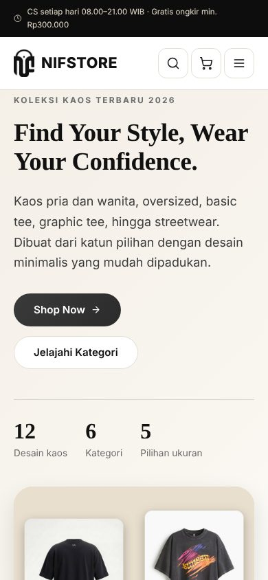
6. Penjelasan Halaman Home
Halaman index.html adalah pintu masuk website. Bagian-bagiannya dari atas ke bawah:
- Navbar berisi logo NIFSTORE, menu berikon berbentuk pill (Home, Produk, Kategori, Tentang Kami, Panduan Ukuran, Kontak) dengan penanda halaman aktif, kolom pencarian, dan tombol keranjang dengan lencana oranye berisi jumlah barang. Pada layar kecil, kolom pencarian menjadi tombol ikon dan menu berpindah ke tombol hamburger.
- Hero dengan judul “Find Your Style, Wear Your Confidence.” dan tombol Shop Now menuju halaman Produk.
- Kategori: enam kartu kategori yang membuka katalog terfilter.
- Produk Terlaris dan Produk Terbaru, dibuat otomatis oleh JavaScript dari data produk.
- Banner promo gratis ongkir untuk belanja di atas Rp300.000.
- Keunggulan NIFSTORE, testimoni pelanggan (contoh), newsletter, dan footer.
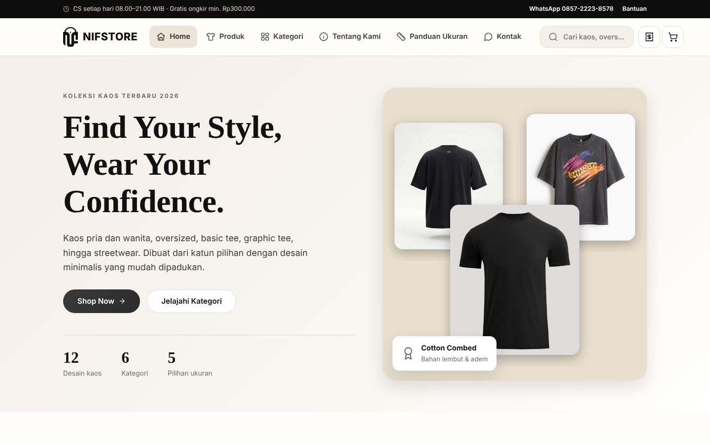
Tombol panah di pojok kanan bawah (kembali ke atas) muncul setelah halaman digulir sekitar 500 px dan membawa pengguna kembali ke bagian atas halaman.
7. Penjelasan Halaman Produk
Halaman produk.html menampilkan katalog 12 produk dalam bentuk grid. Setiap kartu memuat foto produk, label (Best Seller atau Terbaru), kategori, nama, harga dalam Rupiah, titik warna yang tersedia, tombol Lihat Detail, dan tombol Keranjang.
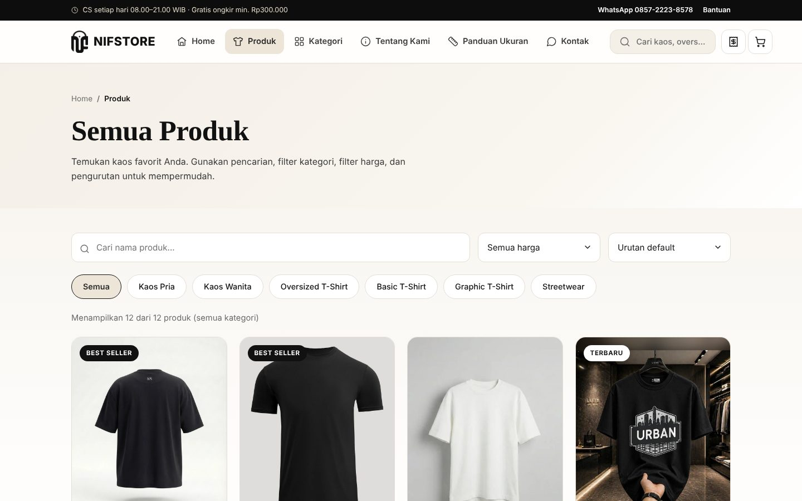
warna[].gambar) dan foto tambahan (galeri) di js/products.js; mengganti foto cukup menimpa berkas di assets/images.8. Cara Mencari dan Memfilter Produk
- Buka halaman Produk.
- Pencarian: ketik kata kunci pada kolom “Cari nama produk”. Hasil berubah seketika saat Anda mengetik.
- Kategori: klik salah satu tombol kategori (Semua, Kaos Pria, Kaos Wanita, Oversized T-Shirt, Basic T-Shirt, Graphic T-Shirt, Streetwear).
- Harga: pilih rentang harga (di bawah Rp150.000, Rp150.000 - Rp199.999, atau Rp200.000 ke atas).
- Urutkan: pilih Harga termurah, Harga termahal, atau Nama A - Z.
- Jumlah produk yang tampil ditunjukkan di atas grid. Klik Reset filter untuk mengembalikan semua pengaturan.
- Bila tidak ada produk yang cocok, halaman menampilkan pesan “Produk tidak ditemukan” beserta tombol reset.
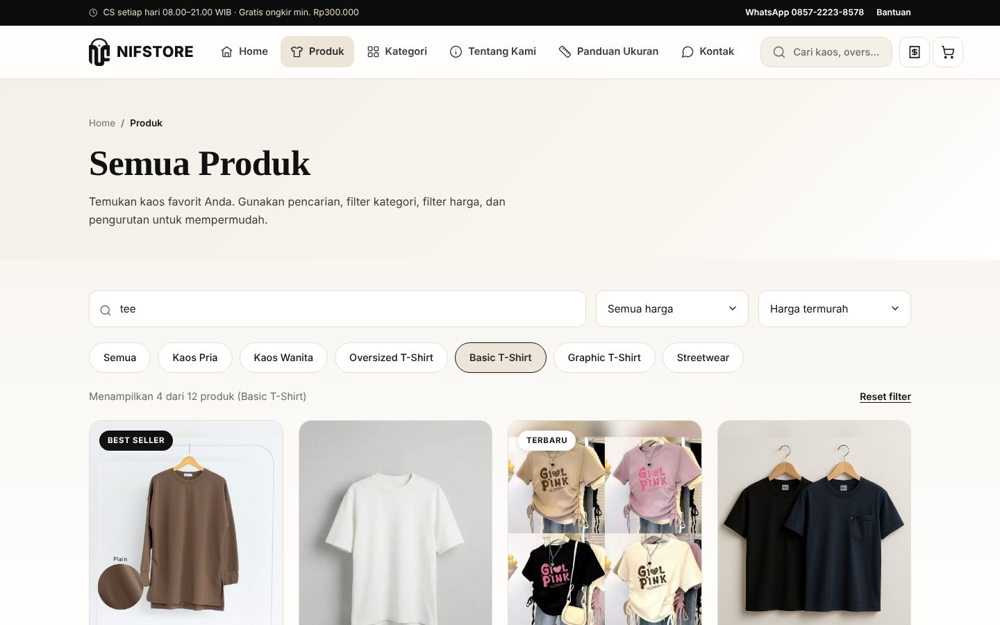
Pencarian juga tersedia di seluruh halaman melalui kolom pencarian (atau ikon kaca pembesar pada layar kecil) di navbar. Panel pencarian menampilkan saran produk saat Anda mengetik, dan menekan Enter akan membuka katalog dengan hasil pencarian tersebut.
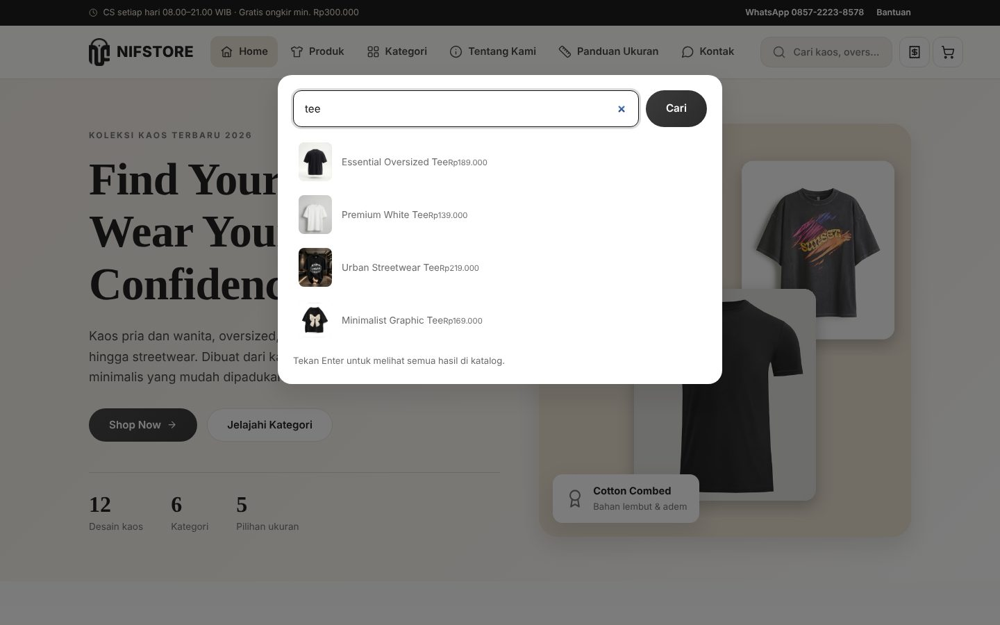
9. Cara Melihat Detail Produk
- Pada kartu produk, klik foto, nama produk, atau tombol Lihat Detail.
- Halaman
detail-produk.htmlterbuka dan isinya menyesuaikan produk yang dipilih (berdasarkan parameter?id=pada alamat). - Halaman menampilkan foto besar, nama, harga, deskripsi, pilihan warna dan ukuran, informasi stok, jumlah, serta tombol aksi.
- Bagian akordeon di bawah memuat Informasi Bahan dan Kualitas, Perawatan Produk, serta Pengiriman dan Pengembalian.
- Di bagian bawah halaman terdapat Rekomendasi Lainnya berupa empat produk terkait.
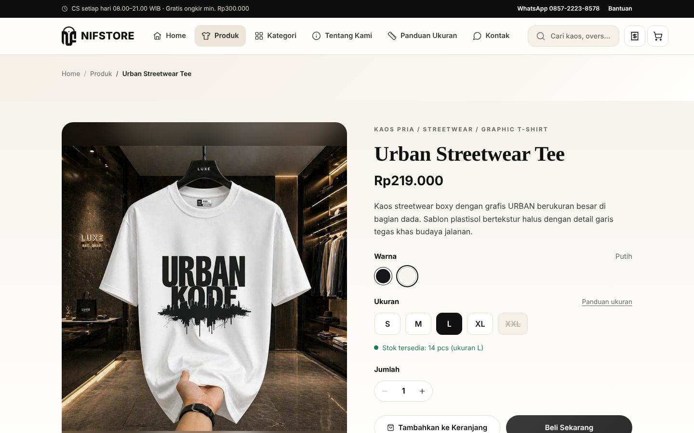
10. Cara Memilih Ukuran dan Warna
- Warna: klik salah satu lingkaran warna atau gambar kecil di bawah foto. Foto utama dan nama warna ikut berganti.
- Ukuran: klik salah satu ukuran S, M, L, XL, atau XXL. Ukuran yang stoknya habis tampil abu-abu bercoret dan tidak dapat dipilih.
- Setelah ukuran dipilih, informasi stok menampilkan jumlah tersedia untuk ukuran tersebut. Bila stok 5 pcs atau kurang, ditampilkan sebagai “Stok menipis”.
- Bila ragu menentukan ukuran, klik tautan Panduan ukuran di atas pilihan ukuran.
11. Cara Menambahkan Produk ke Keranjang
Dari halaman detail produk:
- Pilih warna dan ukuran, lalu atur jumlah dengan tombol + dan − (maksimal sesuai stok).
- Klik Tambahkan ke Keranjang. Notifikasi hijau muncul dan angka pada ikon keranjang bertambah.
- Bila ukuran belum dipilih, muncul notifikasi merah “Pilih ukuran terlebih dahulu”.
- Klik Beli Sekarang untuk menambahkan sekaligus langsung menuju halaman keranjang.
Dari katalog atau halaman Home (tambah cepat):
- Klik tombol Keranjang pada kartu produk. Dialog “Pilih varian” muncul.
- Pilih warna dan ukuran, lalu klik Tambahkan ke Keranjang. Jumlah yang ditambahkan adalah 1 pcs.
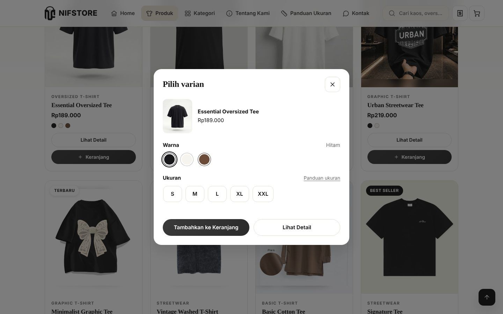
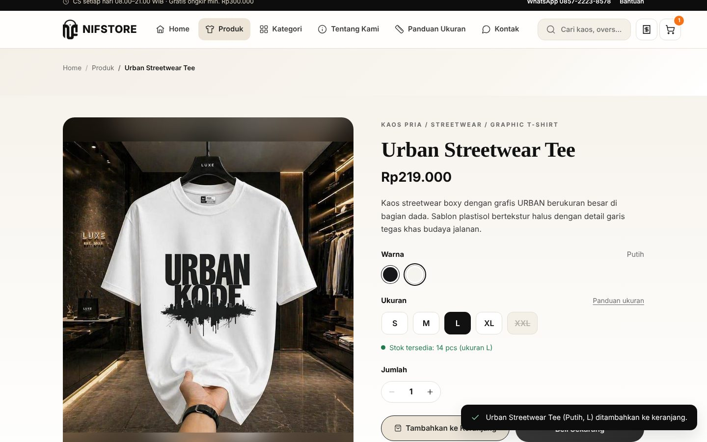
12. Cara Mengubah Jumlah Barang
- Buka halaman Keranjang melalui ikon keranjang pada navbar.
- Pada setiap barang, klik tombol + untuk menambah atau − untuk mengurangi jumlah.
- Tombol + tidak aktif bila jumlah sudah mencapai stok; tombol − tidak aktif pada jumlah 1.
- Subtotal, ongkos kirim, dan total pembayaran dihitung ulang otomatis.
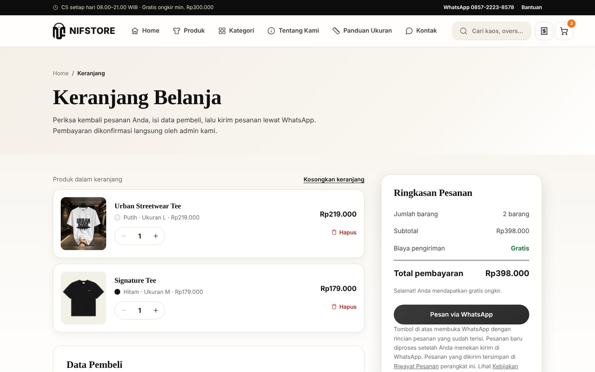
13. Cara Menghapus Barang dari Keranjang
- Pada halaman Keranjang, klik tombol Hapus di sisi kanan barang yang ingin dibuang.
- Untuk menghapus semua barang sekaligus, klik Kosongkan keranjang di atas daftar barang.
- Bila keranjang kosong, halaman menampilkan pesan “Keranjang Anda masih kosong” dengan tombol Mulai Belanja.
14. Cara Melakukan Checkout
- Pastikan barang di keranjang sudah benar.
- Isi Data Pembeli: nama lengkap (minimal 3 karakter, hanya huruf), nomor WhatsApp (format Indonesia, contoh 081234567890), dan alamat pengiriman (minimal 15 karakter).
- Pilih metode pembayaran yang Anda inginkan: Transfer Bank, E-Wallet, atau Bayar di Tempat (COD). Pilihan ini ikut tertulis di pesan WhatsApp.
- Periksa Ringkasan Pesanan. Ongkir Rp15.000, dan otomatis gratis bila subtotal minimal Rp300.000.
- Klik Pesan via WhatsApp. Bila ada data yang salah, pesan kesalahan merah muncul di bawah kolom terkait.
- Bila data valid, muncul jendela ringkasan pesanan berisi nomor pesanan, data pembeli, daftar barang, dan total. Klik Kirim lewat WhatsApp: WhatsApp terbuka dengan rincian pesanan yang sudah terisi, lalu tekan tombol kirim di sana. Setelah tombol diklik, keranjang dikosongkan.
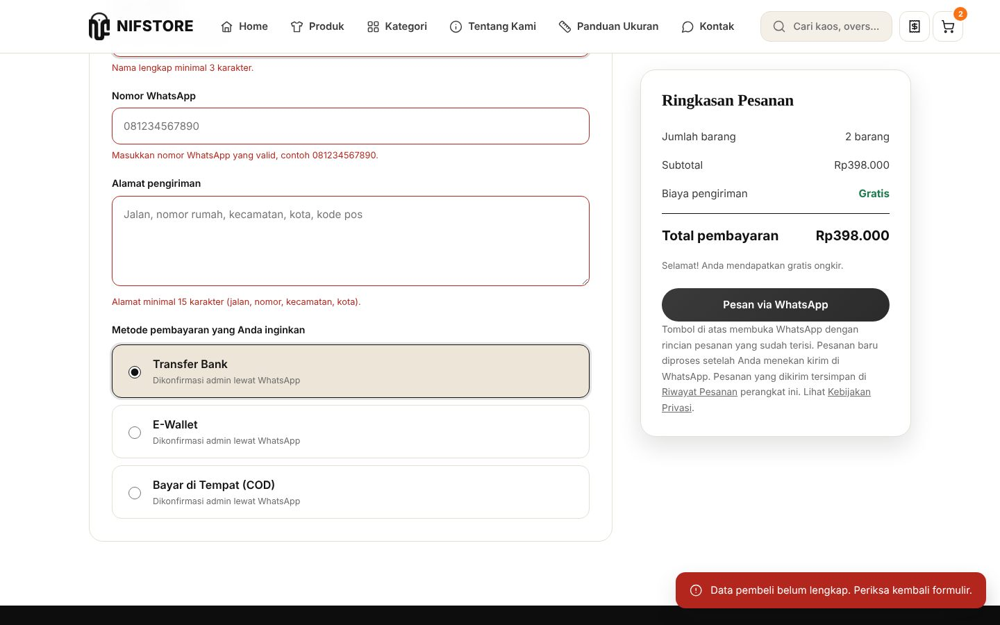
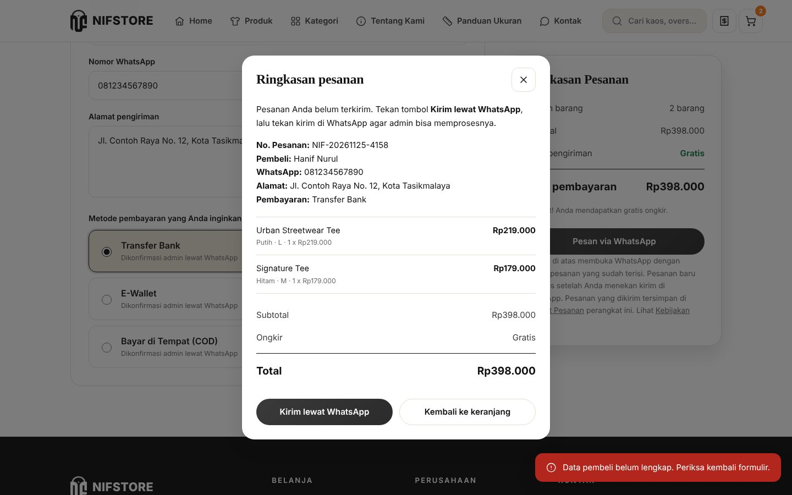
15. Penjelasan Halaman Riwayat Pesanan dan Struk
- Setelah tombol Kirim lewat WhatsApp pada jendela ringkasan diklik, pesanan otomatis dicatat di perangkat Anda.
- Buka halaman Riwayat Pesanan lewat ikon struk di pojok kanan navbar atau tautan di footer.
- Setiap pesanan tampil sebagai kartu berisi nomor pesanan, tanggal, status, foto dan rincian barang, serta total.
- Klik Cetak struk untuk membuka dialog cetak browser; struk bisa dicetak atau disimpan sebagai PDF.
- Tombol Tanya admin membuka WhatsApp dengan nomor pesanan yang sudah terisi, Tandai selesai mengubah status, dan Hapus menghapus satu pesanan. Hapus semua riwayat mengosongkan daftar.
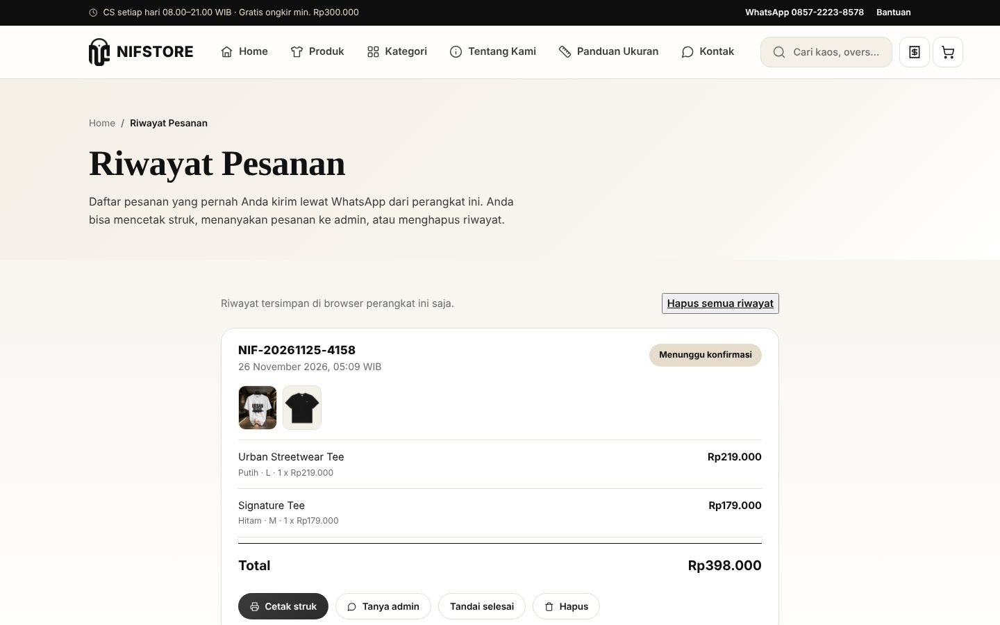
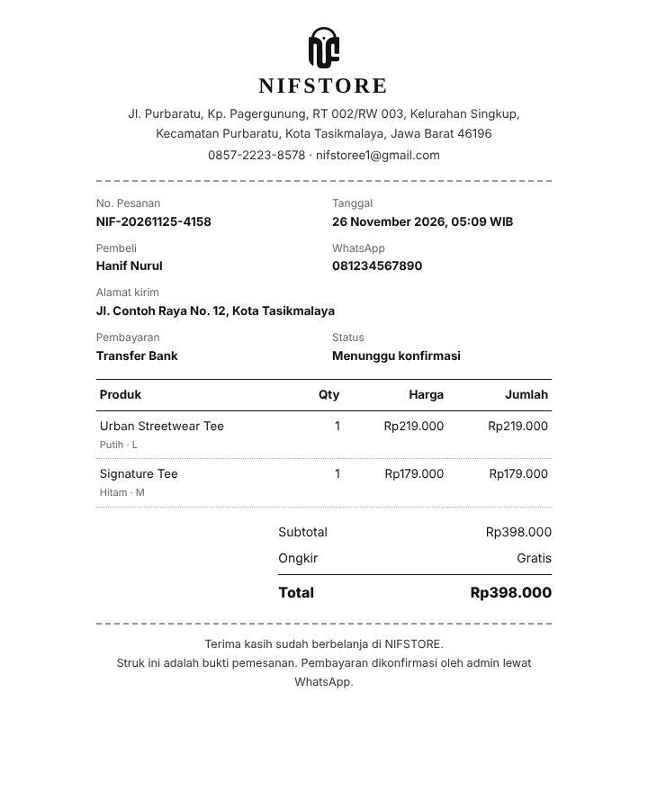
hanif_nifstore_orders_v1), maksimal 50 pesanan terakhir, dan tidak dikirim ke server. Bila data browser dihapus atau memakai perangkat lain, riwayat tidak ikut terbawa.16. Penjelasan Halaman Kategori
Halaman kategori.html menampilkan enam kategori: Kaos Pria, Kaos Wanita, Oversized T-Shirt, Basic T-Shirt, Graphic T-Shirt, dan Streetwear. Setiap kartu memuat gambar, deskripsi singkat, jumlah produk, dan tombol Lihat Produk yang membuka katalog dengan filter kategori yang sudah aktif.
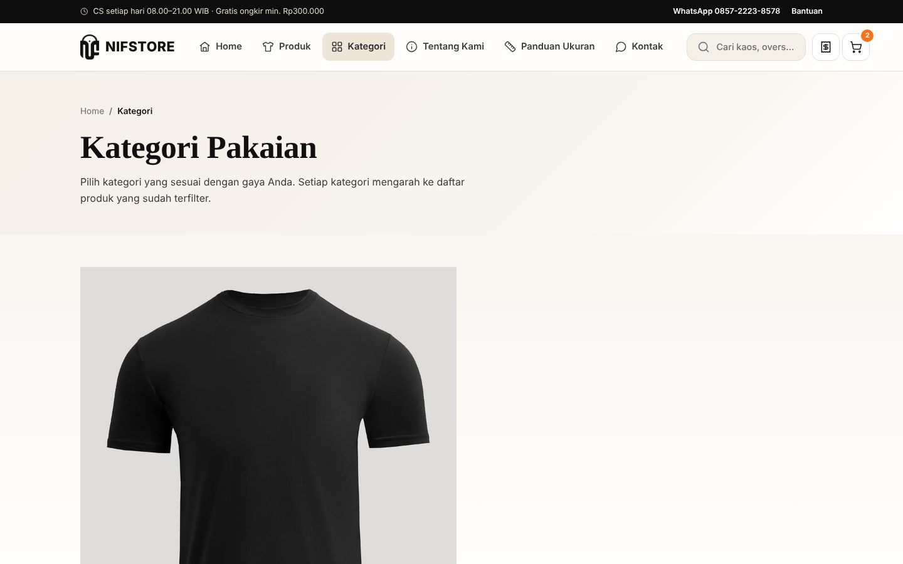
17. Penjelasan Halaman Tentang Kami
Halaman tentang.html adalah profil NIFSTORE. Isinya: cerita singkat NIFSTORE, visi dan misi, filosofi brand, alur proses (desain hingga pengiriman), komitmen kualitas, keunggulan, dan informasi pelayanan pelanggan beserta jam operasional. Narasi pada halaman ini bersifat contoh untuk keperluan tugas.
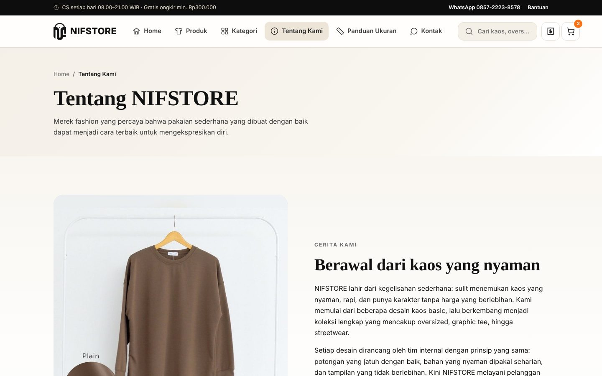
18. Penjelasan Panduan Ukuran
Halaman ukuran.html membantu pengguna memilih ukuran yang tepat.
- Tabel ukuran S sampai XXL berisi lebar dada, panjang badan, dan panjang lengan dalam sentimeter. Terdapat dua tabel: Regular/Fitted dan Oversized/Streetwear.
- Cara mengukur disertai diagram dengan penanda A (lebar dada), B (panjang badan), dan C (panjang lengan).
- Tips memilih ukuran.
- Kalkulator rekomendasi ukuran: masukkan tinggi (140 - 210 cm) dan berat (35 - 150 kg), lalu klik Hitung. Hasilnya adalah perkiraan ukuran; bila data di luar rentang, muncul pesan kesalahan.
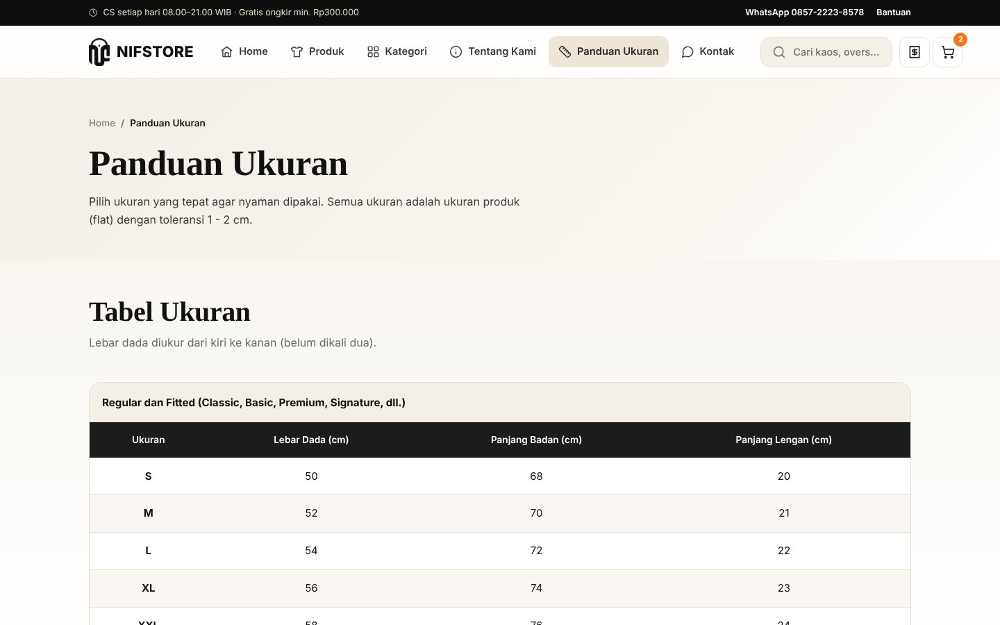
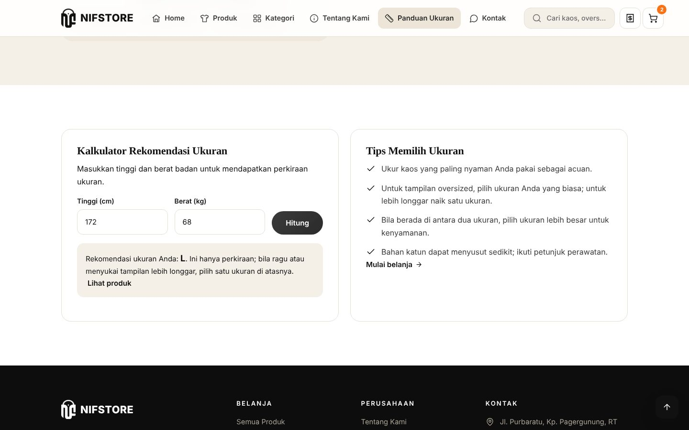
19. Penjelasan Halaman Kebijakan Privasi
Halaman kebijakan-privasi.html menjelaskan data apa yang dikumpulkan website, bagaimana data dipakai, dan hak pengguna. Halaman ini dapat dibuka dari footer setiap halaman.
- Daftar isi di sisi kiri (menempel saat menggulir) berisi tautan ke 10 bagian: pendahuluan, data yang dikumpulkan, penggunaan data, penyimpanan di perangkat, layanan pihak ketiga, keamanan, hak pengguna, pengguna di bawah umur, perubahan kebijakan, dan kontak.
- Menjelaskan bahwa website tidak memiliki server atau database, sehingga keranjang dan riwayat pesanan hanya tersimpan di browser pengguna.
- Menyebut layanan pihak ketiga yang terlibat, yaitu WhatsApp untuk pengiriman pesanan dan Google Fonts untuk font.
- Menutup dengan kontak resmi toko: email
nifstoree1@gmail.comdan WhatsApp 0857-2223-8578.
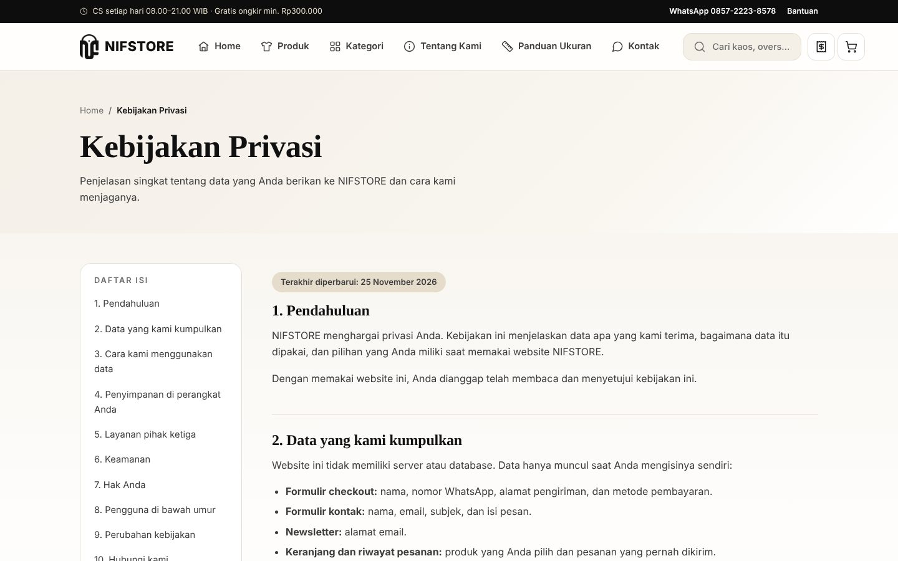
20. Cara Menggunakan Form Kontak
- Buka halaman Kontak melalui menu navbar.
- Isi Nama lengkap (minimal 3 karakter), Email (format valid), Subjek (minimal 5 karakter), dan Pesan (minimal 20 karakter).
- Klik Kirim Pesan. Kolom yang belum benar ditandai merah disertai penjelasan.
- Bila semua valid, WhatsApp terbuka dengan pesan yang sudah berisi nama, email, subjek, dan isi pesan Anda, lalu tekan kirim di sana. Formulir dikosongkan dan muncul pesan berhasil.
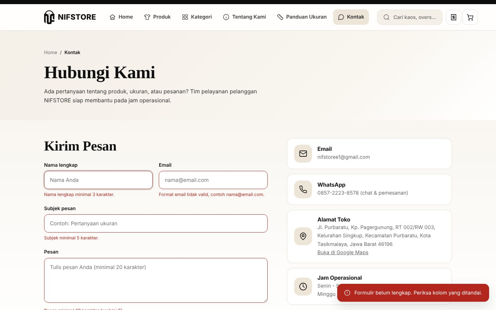
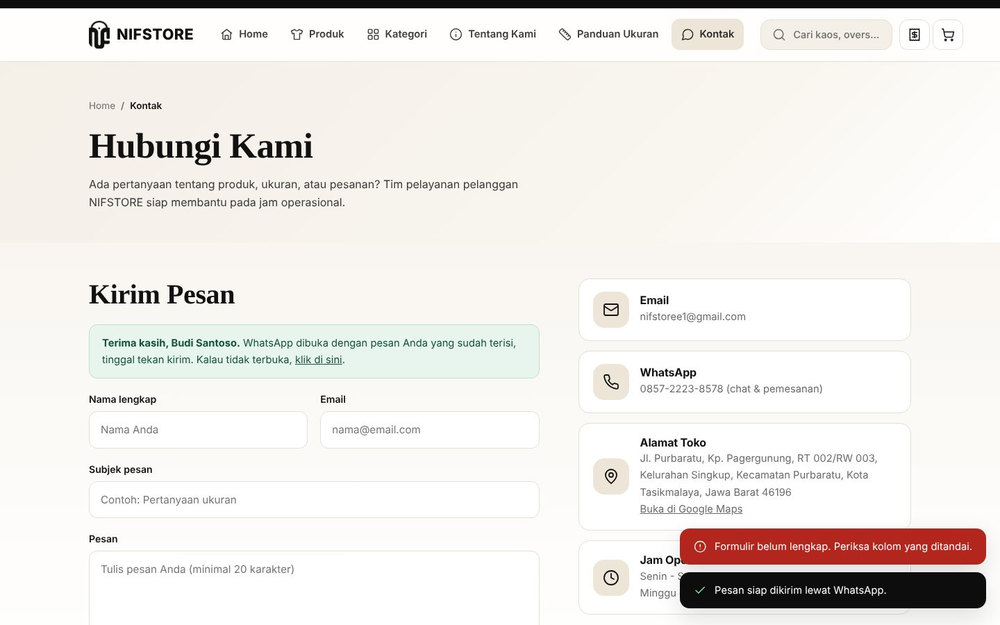
Halaman ini juga memuat informasi toko yang dapat diklik langsung:
- Alamat: Jl. Purbaratu, Kp. Pagergunung, RT 002/RW 003, Kelurahan Singkup, Kecamatan Purbaratu, Kota Tasikmalaya, Jawa Barat 46196. Diklik akan membuka Google Maps.
- Email: nifstoree1@gmail.com. Diklik akan membuka aplikasi email.
- WhatsApp: 0857-2223-8578. Diklik akan membuka chat WhatsApp toko.
- Media sosial: Instagram @nif_store1, TikTok @nif_store1, dan YouTube @nifstore, juga tersedia sebagai ikon di footer.
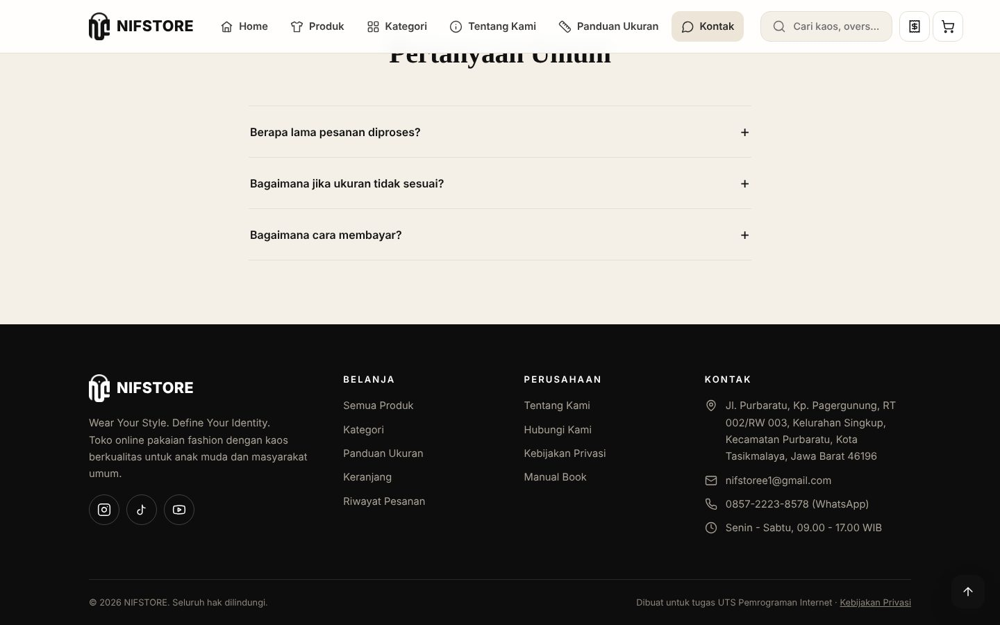
Selain itu terdapat jam operasional dan beberapa pertanyaan umum. Newsletter di bagian bawah halaman Home memvalidasi email dan menampilkan notifikasi simulasi.
21. Cuplikan Script Setiap Halaman
Berikut cuplikan script asli dari tiap halaman. Baris yang terlalu panjang dipotong dengan tanda ....
1. Home
index.html: bagian hero berisi judul, tombol ajakan belanja, dan statistik toko.
<section class="hanif_hero">
<div class="hanif_container hanif_hero_inner">
<div>
<span class="hanif_eyebrow">Koleksi Kaos Terbaru 2026</span>
<h1>Find Your Style, Wear Your Confidence.</h1>
<p class="hanif_lead">Kaos pria dan wanita, oversized, basic tee, graphic tee ...
<div class="hanif_hero_actions">
<a class="hanif_button" href="produk.html">Shop Now <svg>...</svg></a>
<a class="hanif_button hanif_button_outline" href="kategori.html">Jelajahi ...
</div>
<div class="hanif_hero_stats">2. Produk
produk.html: bilah filter berisi pencarian, filter harga, dan urutan; hasilnya dirender oleh main.js.
<div class="hanif_toolbar" role="search">
<div class="hanif_field hanif_input_icon"><label class="hanif_sr_only" for="hanif ...
<div class="hanif_field"><label class="hanif_sr_only" for="hanif_filter_harga">Fi ...
<select class="hanif_select" id="hanif_filter_harga">
<option value="semua">Semua harga</option>
<option value="0-149999">Di bawah Rp150.000</option>
<option value="150000-199999">Rp150.000 - Rp199.999</option>
<option value="200000-99999999">Rp200.000 ke atas</option>
</select></div>3. Detail Produk
js/main.js: fungsi yang mengganti foto utama dan menandai warna terpilih saat swatch diklik.
function setColor(name) {
st.color = name;
var w = H.findColor(p, name);
img.src = w.gambar; img.alt = p.nama + ' warna ' + w.nama;
$('hanif_detail_color').textContent = w.nama;
qsa('.hanif_swatch', root).forEach(function (b) { b.classList.toggle('hanif_is_ac ...
qsa('.hanif_thumb', root).forEach(function (b) { b.classList.toggle('hanif_is_act ...
}4. Kategori
kategori.html: satu kartu kategori; jumlah produk diisi otomatis lewat atribut data-count-kat.
<article class="hanif_category_full hanif_reveal">
<img src="assets/images/kategori-kaos-pria.jpg" alt="Kategori Kaos Pria" loading= ...
<div class="hanif_category_full_body">
<span class="hanif_count" data-count-kat="kaos-pria"></span>
<h2>Kaos Pria</h2><p>Potongan maskulin yang nyaman untuk aktivitas harian, dari ...
<a class="hanif_button" href="produk.html?kategori=kaos-pria">Lihat Produk <svg ...
</div>5. Tentang Kami
tentang.html: bagian cerita toko dengan foto di kiri dan teks di kanan.
<div class="hanif_container hanif_split">
<img class="hanif_reveal" src="assets/images/tentang.jpg" alt="Kaos basic lengan ...
<div class="hanif_reveal">
<span class="hanif_eyebrow">Cerita Kami</span>
<h2>Berawal dari kaos yang nyaman</h2>
<p>NIFSTORE lahir dari kegelisahan sederhana: sulit menemukan kaos yang nyaman, ...
<p>Setiap desain dirancang oleh tim internal dengan prinsip yang sama: potongan ...
<p class="hanif_note">Profil ini disusun sebagai narasi contoh untuk keperluan ...
</div>6. Panduan Ukuran
js/main.js: validasi tinggi dan berat badan pada kalkulator ukuran, lalu perhitungan rekomendasinya.
var t = parseFloat(form.elements['tinggi'].value), b = parseFloat(form.elements[' ...
if (!(t >= 140 && t <= 210) || !(b >= 35 && b <= 150)) {
out.hidden = false;
out.innerHTML = '<strong>Data belum valid.</strong> Masukkan tinggi 140-210 cm ...
toast('Periksa kembali tinggi dan berat badan.', 'error');
return;
}
var idx = b < 55 ? 0 : b < 66 ? 1 : b < 76 ? 2 : b < 89 ? 3 : 4; // berdasarkan ...
if (t >= 178) idx += 1; else if (t <= 155) idx -= 1; // koreksi ti ...
idx = Math.max(0, Math.min(4, idx));
var ukuran = H.sizes[idx];
out.hidden = false;
out.innerHTML = 'Rekomendasi ukuran Anda: <strong>' + ukuran + '</strong>. Ini ha ...
});7. Keranjang
js/cart.js: fungsi menambah barang ke keranjang dan membatasi jumlah sesuai stok.
function add(id, ukuran, warna, qty) {
var p = H.findProduct(id);
qty = parseInt(qty, 10) || 1;
if (!p) return { ok: false, msg: 'Produk tidak ditemukan.' };
if (!ukuran || !p.stok.hasOwnProperty(ukuran)) return { ok: false, msg: 'Pilih uk ...
var w = H.findColor(p, warna);
var max = p.stok[ukuran];
if (max < 1) return { ok: false, msg: 'Maaf, ukuran ' + ukuran + ' sedang habis.' ...
var list = read();
var k = keyOf(p.id, ukuran, w.nama);
var found = null;
list.forEach(function (it) { if (keyOf(it.id, it.ukuran, it.warna) === k) found = ...
var sudah = found ? found.qty : 0;
if (sudah + qty > max) {8. Kontak
js/main.js: aturan validasi formulir kontak.
var rules = {
nama: function (v) { return v.length < 3 ? 'Nama lengkap minimal 3 karakter.' : ' ...
email: function (v) { return /^[^\s@]+@[^\s@]+\.[^\s@]{2,}$/.test(v) ? '' : 'Form ...
subjek: function (v) { return v.length < 5 ? 'Subjek minimal 5 karakter.' : ''; },
pesan: function (v) { return v.length < 20 ? 'Pesan minimal 20 karakter (saat ini ...
};9. Riwayat Pesanan
js/cart.js dan js/main.js: menyimpan pesanan ke localStorage lalu mencetak struk.
function saveOrder(order) {
var list = readOrders();
list.unshift(order);
writeOrders(list.slice(0, 50));
}function cetakStruk(o) {
var box = $('hanif_struk');
if (!box) return;
box.innerHTML = strukHtml(o);
document.body.classList.add('hanif_print_struk');
var done = function () { document.body.classList.remove('hanif_print_struk'); win ...
window.addEventListener('afterprint', done);
window.print();10. Kebijakan Privasi
kebijakan-privasi.html: daftar isi samping yang menautkan ke tiap bagian kebijakan.
<aside class="hanif_policy_toc" aria-label="Daftar isi"><h2>Daftar isi</h2><ol><li> ...
22. Penjelasan Fitur JavaScript dan localStorage
| Berkas | Tugas |
|---|---|
js/products.js | Menyimpan data 12 produk (nama, harga, kategori, warna, stok per ukuran, bahan), data 6 kategori, ikon, dan fungsi bantu seperti format Rupiah. |
js/cart.js | Mengelola keranjang (tambah, ubah jumlah, hapus, kosongkan), menghitung subtotal, ongkir, dan total, menjalankan validasi checkout, serta menyimpan riwayat pesanan. |
js/main.js | Menu mobile, panel pencarian, notifikasi dan jendela dialog, tombol kembali ke atas, katalog dengan filter dan sorting, detail produk dinamis, kalkulator ukuran, validasi form kontak, riwayat pesanan dan cetak struk, serta newsletter. |
Cara kerja localStorage. Setiap kali isi keranjang berubah, daftar barang (id produk, ukuran, warna, jumlah) disimpan di localStorage dengan kunci hanif_nifstore_cart_v1. Saat halaman dimuat ulang atau berpindah halaman, data dibaca kembali sehingga keranjang tidak hilang. Data hanya tersimpan di browser dan perangkat yang sama, serta dapat dihapus dengan tombol Kosongkan keranjang atau membersihkan data situs di browser.
Fitur interaktif lain: navigasi mobile (hamburger) pada layar di bawah 900 px, notifikasi sukses dan gagal, animasi muncul saat menggulir, dan penyesuaian stok sehingga jumlah barang tidak melebihi persediaan.
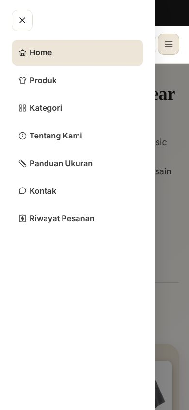
23. Struktur Folder dan File Project
NIFSTORE/
├── index.html Halaman Home
├── produk.html Katalog produk
├── detail-produk.html Detail produk dinamis
├── kategori.html Daftar kategori
├── tentang.html Tentang Kami
├── ukuran.html Panduan ukuran
├── keranjang.html Keranjang dan checkout
├── kontak.html Halaman kontak
├── riwayat.html Riwayat pesanan dan cetak struk
├── kebijakan-privasi.html Kebijakan privasi
├── manual-book.html Manual book (siap cetak ke PDF)
├── manual-book.pdf Manual book versi PDF
├── css/
│ ├── style.css Gaya seluruh website
│ └── manual-book.css Gaya manual book
├── js/
│ ├── products.js Data produk dan fungsi bantu
│ ├── cart.js Logika keranjang dan checkout
│ └── main.js Interaksi dan logika halaman
└── assets/
├── images/ Foto produk, kategori, hero (JPG)
├── icons/ Logo dan favicon
└── screenshots/ Tangkapan layar untuk manual book
Menjalankan secara lokal. Ekstrak berkas ZIP, lalu klik ganda index.html agar terbuka di browser (atau jalankan python -m http.server 8000 lalu buka http://localhost:8000). Untuk publikasi, unggah seluruh isi folder ke GitHub Pages, Netlify, atau Vercel; pertahankan susunan folder agar tautan CSS, JavaScript, dan gambar tetap terbaca.
Aturan penamaan CSS. Semua class dan ID buatan sendiri diawali hanif_, misalnya #hanif_header, .hanif_menu, .hanif_container, .hanif_product_card, .hanif_button, dan .hanif_footer (pada website ini footer memakai #hanif_footer). Nama pada HTML, CSS, dan JavaScript telah disesuaikan.
24. Penutup
Demikian manual book website NIFSTORE. Website ini telah dilengkapi 10 halaman yang saling terhubung, katalog dengan pencarian, filter, dan sorting, detail produk dinamis, keranjang berbasis localStorage, checkout lewat WhatsApp, riwayat pesanan dengan struk cetak, kebijakan privasi, serta tampilan responsif.
Pengembangan selanjutnya dapat berupa integrasi backend dan database untuk data produk, autentikasi pengguna, payment gateway sungguhan, serta penambahan foto sudut lain untuk setiap produk.